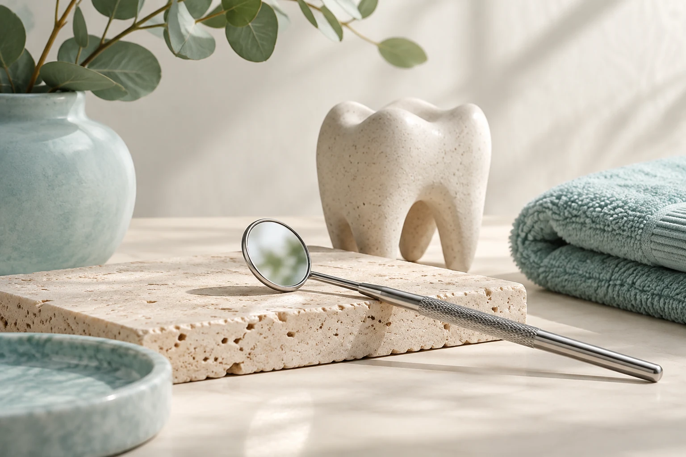

Avaliação odontológica
Converse sobre sua necessidade e pergunte como começar o cuidado.
CUIDADO INDIVIDUALOdontologia · Senhora de Fátima
Seja para cuidar de um incômodo ou manter a saúde bucal em dia, fale com a clínica e descubra como começar seu atendimento.

03 · SOBRE O PROFISSIONAL
Uma conversa clara ajuda você a se preparar para a consulta.
Da primeira avaliação às dúvidas sobre valores, você merece saber o que esperar antes de marcar. Conte o que procura à equipe da Lagares Machado Odontologia e receba informações sobre o atendimento disponível.
Antes de escolher, conheça também as avaliações públicas no Google: nota 5,0 em 36 avaliações. Converse com a equipe sobre a sua necessidade.
04 · COMO PODEMOS AJUDAR
Fale sobre sua saúde bucal e entenda qual atendimento pode ser o próximo passo.
Converse sobre sua necessidade e pergunte como começar o cuidado.
CUIDADO INDIVIDUALMantenha as dúvidas em dia e converse sobre cuidados adequados à sua rotina.
ORIENTAÇÃO PROFISSIONALConsulte quais procedimentos estão disponíveis e como é feita a indicação.
PARA A SUA ROTINAPeça informações sobre custos e formas de pagamento antes de agendar.
FALE CONOSCO05 · BENEFÍCIOS PARA VOCÊ
Entenda suas opções e escolha como começar o cuidado odontológico.
Consulte os preços e as formas de pagamento antes de escolher o atendimento.
Nota 5,0 em 36 avaliações no Google. Leia os relatos para conhecer outras experiências.
Consulte horários, formas de pagamento e disponibilidade antes de agendar.
06 · COMO COMEÇAR
Uma conversa ajuda a entender as opções e escolher o próximo passo para você.
Conte o que está sentindo ou o cuidado que deseja planejar.
Converse sobre avaliação, alternativas, valores e o que esperar.
Confirme disponibilidade e combine sua consulta pelo telefone.
07 · PERTO DE VOCÊ
Visite o atendimento em Senhora de Fátima, Betim. Consulte a rota e confirme o melhor horário antes de sair.
Av. Coletora Artur Trindade, 751 - Lj 3 - Sra. de Fátima, Betim - MG, 32672-235, BrasilVer rota no Google Maps08 · DÚVIDAS FREQUENTES
Ligue para contar o que procura e confirmar quais atendimentos estão disponíveis e como começar.
A consulta permite conversar sobre sua necessidade e receber orientação profissional. Confirme duração e valores.
Os valores dependem do atendimento. Ligue para consultar preço e formas de pagamento.
Use o botão de telefone para consultar horários diretamente com a equipe.
09 · FALE CONOSCO
Ligue para conversar sobre o atendimento, consultar valores e escolher um horário na Lagares Machado Odontologia.